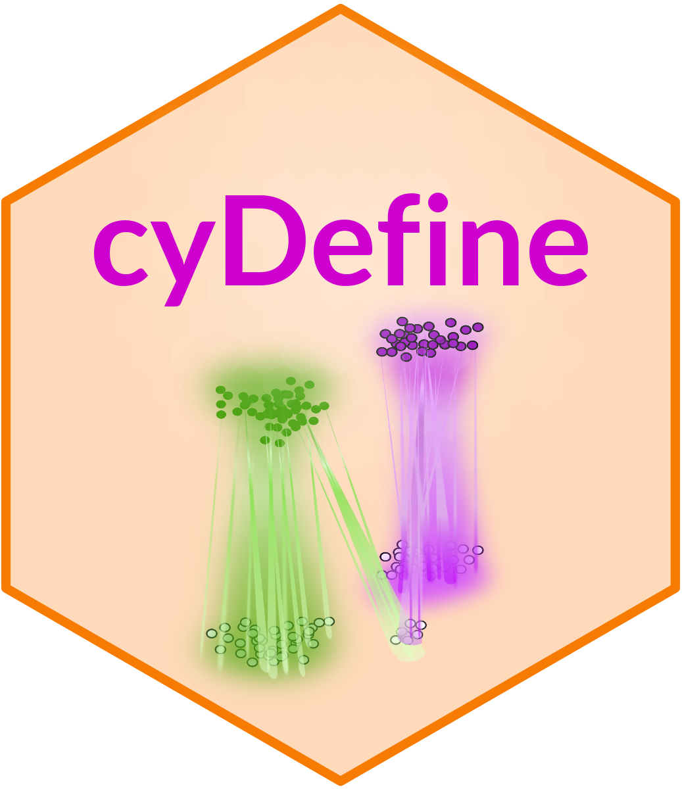
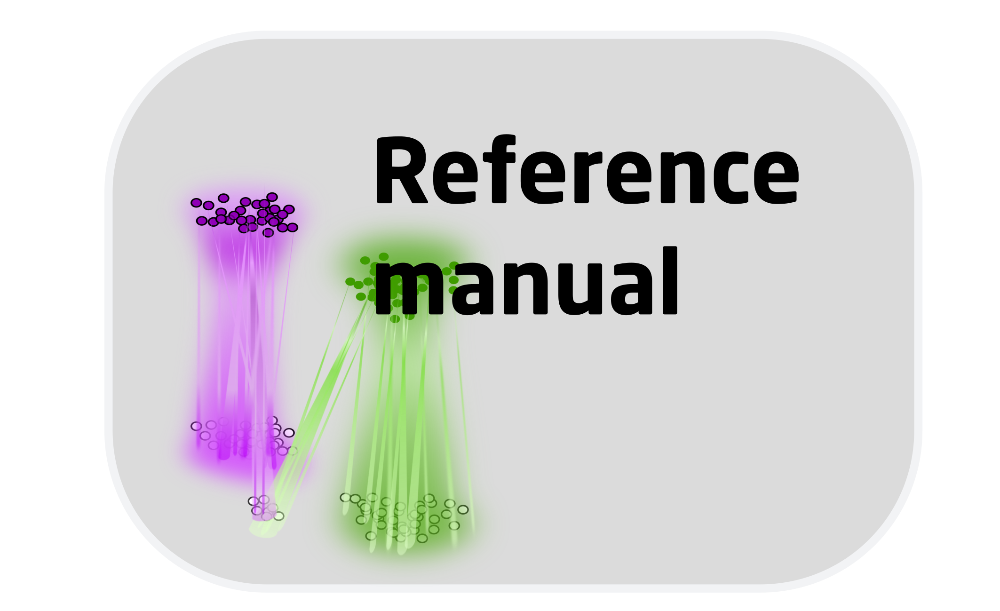
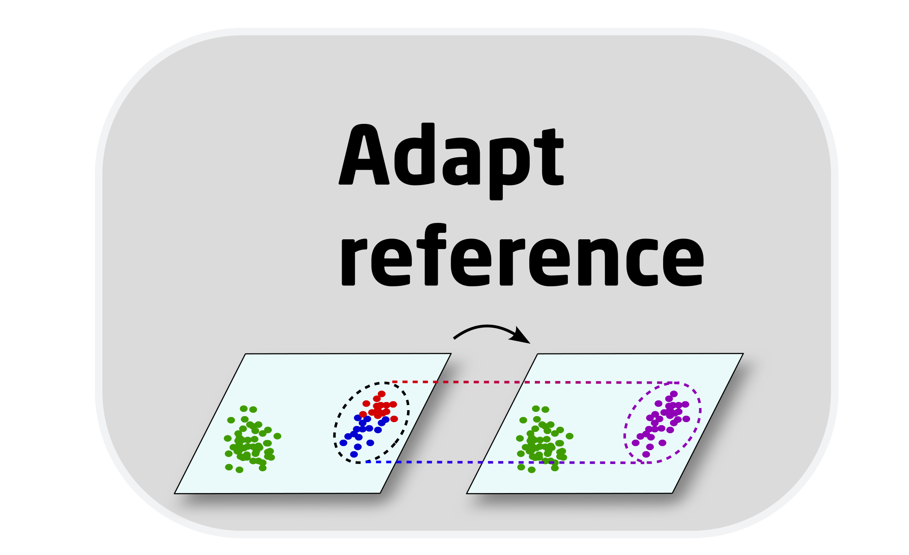
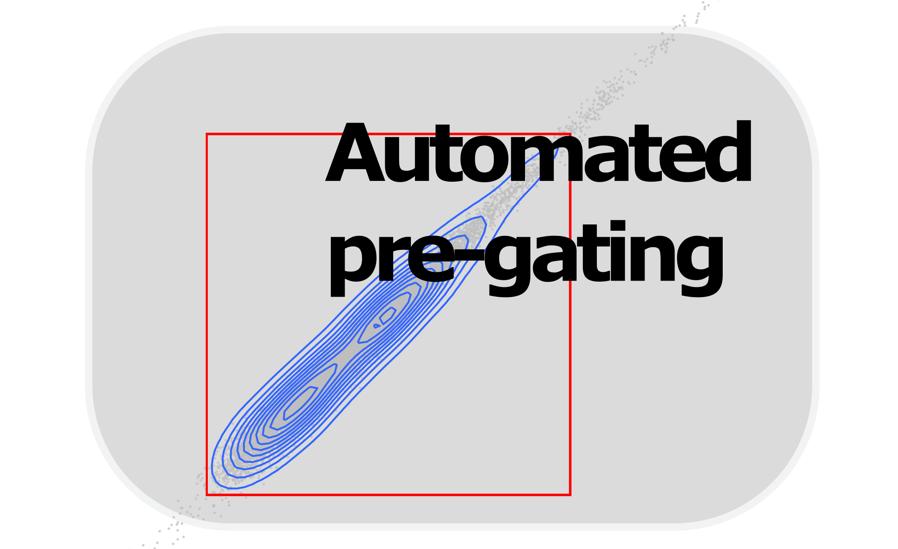
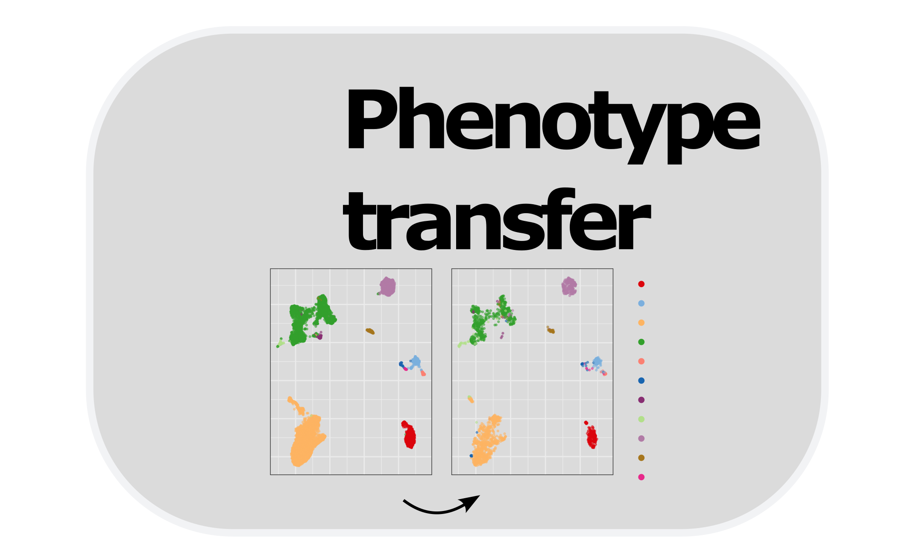

This page contains the vignettes demonstrating use cases and examples
of phenotype transfer with cyDefine. The article
introducing cyDefine is in prep.
If you have any issues or questions regarding the use of cyDefine, please do not hesitate to raise an issue on GitHub. In this way, others may also benefit from the answers and discussions.
|
 Reference manual |
 Reference adaptation |
|
 Vignette for pregating analysis |
 Vignette for multimodal phenotype transfer (CyTOF to scRNA-seq) |
Contact